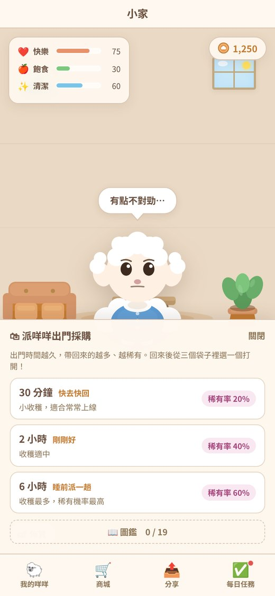
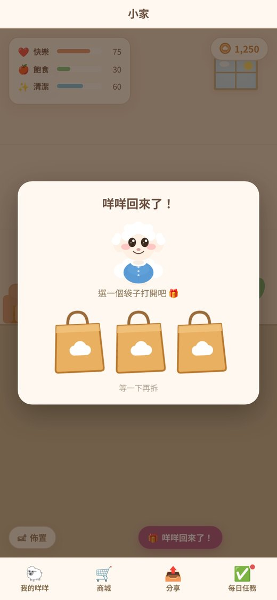
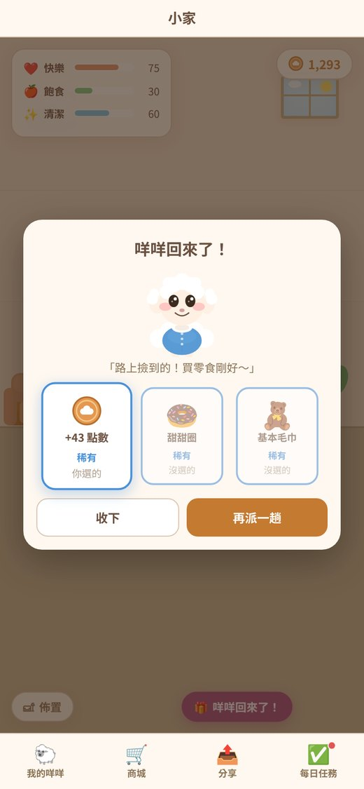

Challenge
The goal was to design a mobile game to boost usage for an e‑commerce platform. The game had to be engaging and fun on its own merits.
It had to
- Run on its own
- Bring players back
- Spread through sharing
- Treat shopping as an optional extra, not a way to chase discounts
The limits
- Cheap to maintain
- Audience: female university students
- Runs inside LINE
Research and proposal
I compared more than a dozen games and apps in four groups, and came up with three directions.
| Group | Examples | What I noted |
|---|---|---|
| E-commerce platforms in Asia | Shopee, Taobao, Pinduoduo, Dewu | Shopee needs only 15 seconds of taps. Pinduoduo's forced invitations drew controversy. |
| Gamification in the US | Starbucks, Temu, Nike | Points, spin wheels and community challenges. |
| Beyond e-commerce | Ant Forest, Aligala, IKEA Kreativ, The Co-Worker Game | Ant Forest spreads through goodwill, not discounts. |
| LINE games and pet apps | LINE mini games, PicPet | PicPet's dying pet pulls players back. |
Three directions
| Direction | Idea | Result |
|---|---|---|
| Run an e‑commerce platform | An idle management game. Stock products, buy ads, and rise from a street stall to a cross-border platform. | Phase 2 |
| Raise a pet | Shopping feeds the pet, and friends visit its home. | Phase 1 |
| Design outfits | Players build outfits from a library and friends vote each week. | Set aside It needed a main product category the platform had not defined. |
A virtual pet won because it builds a bond first and shopping can come later.
The prototype
Problem
After the daily tasks, the gameplay needed more to keep players motivated.
Fix
I added errands. Meimei goes out, comes back, and the player opens one of three bags. Feeding and cleaning became things to do on the way.



Designed around the player
I designed the errands so that coming back always feels like a reward.
- Every trip brings something back, and duplicates turn into points that Meimei mentions, so nothing disappears silently.
- The three bags share one rarity, so the pick is about taste, not luck.
- Long trips pay more, so players who can only send her out once, before bed, are not left behind.
I wrote the design and build specs, and Claude Code generated the code from them. The prototype connects to LINE through Cloudflare and LINE OA. All art is placeholder, emoji and vector shapes generated with AI. Meimei is Datamana's existing mascot.